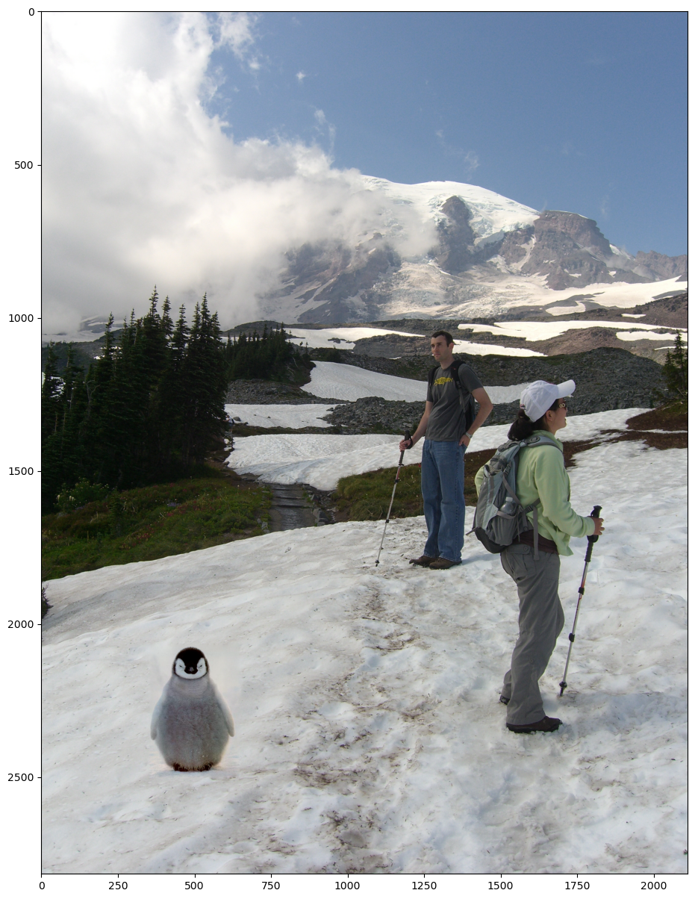

Snow (Background)

Penguin

Poisson Blended Result

This project was focused on some custom blending techniques. Check out the original instructions here!
In this part, we implemented a smaller scale version of gradient domain fusion, building up to the task of implementing Poisson blending. We implement a toy solver, where we solve for v, the gradients that minimize the difference between the source image (the image we want to add in), and the target (background image).
Attached are the results from the reconstructed face.
The error was found to be around ~0.001 (saying around since they vary with each re-run).


Now, we implement the real thing.
Snow (Background)
|
Penguin
|
Poisson Blended Result |

In this image, I took the same image, and enhanced it in two ways - black and white enhancement, and "cartoonization". With Black and white enhancement, we do a similar thing we did with alpha filtering, but with the Sobel gradient. Here is the procedure I used to cartoonize my image.